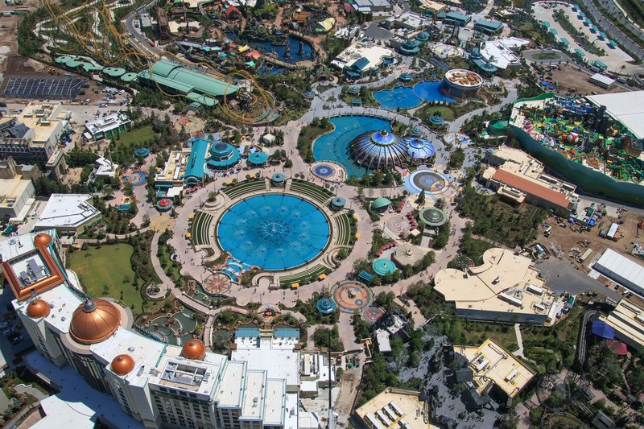
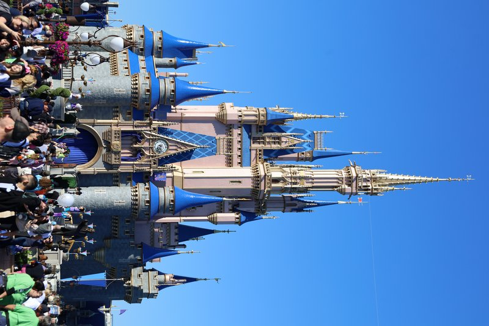

This trip spans the two bookends of American theme-park design. Magic Kingdom perfected the hub-and-spoke — one castle, six lands, every sightline managed. Epic Universe is the first ground-up rethink in a generation: its hub is a garden, and its lands hide behind portals, invisible until you step through. Walking both in 48 hours is a masterclass in how the craft evolved across half a century.
The hotel's neighborhood is named for Philip Phillips, the citrus baron whose groves once covered these hills. His company pioneered flash pasteurization, which made orange juice drinkable year-round and put Florida citrus on every American breakfast table. Restaurant Row now grows on his old grove land — which feels like a fair trade.